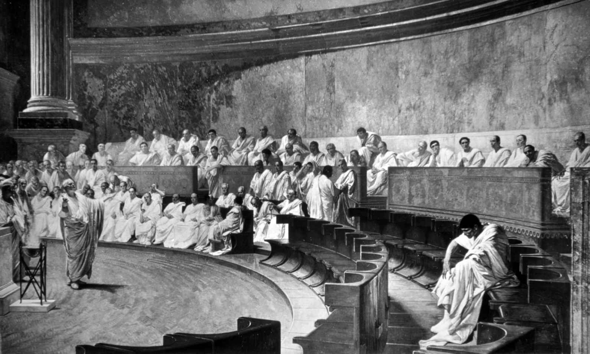

言之有物、言之成理的演说技巧在每一个人类社会都必不可少，在希腊和罗马社会，能言善道一直是一项了不起的技能。本章将考察演说何以在古典世界如此重要，以及它如何不断发展，以满足演说者和观众不断变化的需求。有效的交际所依赖的规则和技巧在古代世界被称为“修辞”，从公元前5世纪以后，学习修辞术一直是希腊人和罗马人高等教育的重要支柱。严格说来，我们这里关注的是演说而非修辞，也就是说，我们关注的是现存的演说词，而不是它们背后的技术规则，虽然出于不言而喻的原因，此二者密不可分。演说或许是我们这个时代最不看重的一个古代文类了，似乎受到了政客等种种人士“修辞”（带有贬义的）的玷污，但这个文类中包含了希腊语和拉丁语散文的某些最佳典范，而现存的演说词也阐释了希腊和罗马社会的许多基本特征。
早在技术论文和正式培训出现之前很久，早期希腊史诗中就已经提到了演说的重要性，因为荷马理想中的英雄就既是“实干家”，也是“演说家”。但演说繁荣发展成为一种为说服大众而不可或缺的主要形式，却是在公元前5世纪的西西里和雅典等民主城邦。无论在民主集会上还是在法庭上，演说者的成功取决于他说服大多数同侪为自己投赞成票的能力——这里的代词绝对是“他”，因为女人被视为政治和法律上的“次要群体”。（集会有数千人参加，而每个雅典陪审团包括几百位公民，具体数字取决于案件类型。）雅典这样的民主社会对个体公民的言论自由权利极为自豪，但要享受这项自由，就必须承担起直接参与政治和在法庭中代表自己的责任，不过如有必要，也可以请一位演说撰稿人帮忙。由于（在某些案件中）演说者的生命或生计悬于一线，又没有法官或专业律师引导舆论，一个人赢得广大听众赞同的能力就显得至关重要，难怪现存的政治和法律演说词每一篇都慷慨激昂，动之以情，晓之以理。
和现代民主社会一样，在为言论自由而自豪的同时，他们也会对那些油嘴滑舌的空谈者充满疑虑，并为毫无原则的如簧巧舌而深感不安。民主的批评者们，例如保守的修昔底德或反动的柏拉图，都曾指出民众（dēmos ）总会被利己主义的演说者（或煽动民意的政客）动摇，但雅典人在明智地权衡利弊之后，觉得为了政治平等，付出被骗的代价也是值得的。或者说我们总能指出这样的问题：高超的修辞技巧会说动陪审团宣判被告无罪，即便案情的事实证据指向被告有罪，但时至今日仍是如此——我们都知道，一位出色的律师能够左右结果，以及还是必须要说服陪审团或法官。柏拉图反对民主修辞的怪异做法无人理睬，而对希腊演说最有影响的分析，是由柏拉图那位实用主义的学生亚里士多德撰写的，他认识到了这一文类在公共生活中正当合理的作用。正是从亚里士多德那里，我们知道了把演说分为三大类这个简略但有用的做法，这三大类分别是政治演说、诉讼演说和典礼演说。 [1]
政治演说通常是面对政治集会所做的，或许可比现代的议会演讲。古代世界没有政党，政治是由个人推动的。谁也不知道辩论的具体走向如何，因而成功的政治演说家需要即兴演讲的能力。关键事实和段落可以默记在心，但如若不能够当场快速作出反应，演说者的政治生涯就不会太长久。由于原告和被告都是代表自己演说的，诉讼或法庭演说者通常是外行，（如果能雇得起的话）要依靠一位专家来为自己写演说稿，而衡量专业演说家技巧的一个必要尺度，就是看他能否在演说中为自己的客户创造一个角色，帮助他赢得诉讼。在法庭上不能念稿，因此演说者必须依靠记忆，但同样，一位技巧高明的演说稿撰写人应当可以创造一种即兴演说的假象。法庭也是政治宿敌的舞台，对各种各样的欺诈和行为不端的指控满天飞，优秀的演说家总有用武之地。最后，炫耀式演说或典礼演说出现在社会生活的重大事件中，最庄严的要属葬礼演说这一门类，在葬礼上，城邦对那些为保卫它而献出生命的公民给予无上的光荣。这类演说明确维护了演说者和听众共同的价值观，强化并赞美了他们共同的身份。
下面来考察一些例子。吕西亚斯的题为《论埃拉托色尼的谋杀》的法庭演说词是流传下来最迷人的演说词之一，盖因其中充满了古代雅典家庭日常生活的细节。被告尤斐利托斯因为杀死了公民埃拉托色尼而受到审判，但（他辩解说）他当场抓住了埃拉托色尼与他的妻子通奸 [2] ，有理由当场杀死埃拉托色尼。这篇演说词是历史学家梦寐以求的珍品，因为它展现出大量社会和法律问题，从对女性行为的管制以及对通奸和合法子嗣的关注，到雅典房屋的形状和布局。但它的文学技巧也非常出色，吕西亚斯看似简单明了的文风为演说者创造了一个角色，对赢得此案来说简直无懈可击。比方说在这里，尤斐利托斯描述了妻子可疑的行为和他自己无辜的反应：
（吕西亚斯，1.11—12）
这里的叙事把尤斐利托斯塑造成了一个天真轻信的人，而他的妻子却欺上瞒下，让家里的仆人与主人反目，甚至利用嗷嗷待哺的婴儿来进一步满足自己的情欲：这里说的每一个字，目的都是在由雅典男性公民组成的陪审团中引发最大的愤怒。
尤斐利托斯巧妙构思的平实语言让我们看到了一个诚恳老实、不太聪明、说话直率的人，但他的风格也可以升华，带上一股庄严的语调，比方说当被告回忆起他对奸夫说的最后几句话时：
（1.25—26）
这是个极其高明的策略，利用了雅典陪审团对自己的法律体系以及它优于仇杀暴力的自豪感。通过对陪审员们宣称“我没有杀死埃拉托色尼，是你们的法律杀死了他”，尤斐利托斯呈现出的自我形象不是个预谋已久残忍复仇的愤怒丈夫，而是雅典人法律的正义之剑，当场代表雅典人对罪犯执行了处罚。
德摩斯梯尼在古代即被认为是最伟大的希腊演说家，他努力激励和建议雅典人拿起武器抵抗马其顿的腓力二世的崛起，最终成就了几篇有史以来最精彩的演说。公元前351年，德摩斯梯尼发表了第一篇被恰如其分地命名为《反腓力辞》的演说，他在其中时而激励雅典人回忆自己光荣的过去（或以此来羞辱他们），时而尖刻地批评他的听众如今这副胆小如鼠、慢慢吞吞的模样：
（《反腓力辞》1.40）
像未经训练的外国拳击手一样，雅典人的士兵被腓力牵着鼻子走，一点儿也没有先计后战的谋略。不足为奇，德摩斯梯尼所有关于马其顿崛起的演说都把德摩斯梯尼本人描述为一个在反对暴政的战争中为自由振臂高呼的大无畏斗士。我们知道他的呼吁徒劳无益，雅典人最终还是屈服于腓力及其子亚历山大大帝（以及其继承者）的君主制，于是这些演说词就有了一种发人深省又令人黯然的气质，仿佛是为民主的终结书写的祭文。
罗马精英阶层的成员们熟读雅典演说家的演说词，那是他们所受教育的一部分，在很大程度上，这一教育关注的是那些能够培训罗马公民，让他们在未来的公共生活中挑起大梁的修辞典范。同撰史一样，老加图在罗马演说的初期扮演了重要角色，不过他的演说词只有片段存世。虽然他懂希腊语，但还是坚持在雅典人的集会中用拉丁语演说，证明拉丁语才是当时地中海世界的主要语言。关于如何做一个言之有物的演说者，他著名的建议言简意赅：“把握题目，话语自然从之”（rem tene, verba sequentur ），这一建议建立在絮絮叨叨、巧言令色的希腊人，直言坦率、没有废话的罗马人这一对比之上——这是老加图为了自己的政治目的颇为擅长之事。现存的演说词片段表现了他简洁有力的文风和合乎时宜的主题：“盗窃私人财务者锒铛入狱；公贼却穿金戴紫。”（《演说词》片段224）
和希腊一样，能言善辩也是罗马一切公共生活领域的基本技能，在法庭和政治集会（无论是对着集会公众还是只有少数人参加的元老院演讲）上尤其如此，但在军事、外交和宗教场合也一样重要。在法庭演说领域，罗马的做法与希腊有所不同，它允许一位辩护人代表某人讲话，这样的演说者必须是罗马社会有头有脸的人物（或者必须给人以这样的印象）。但该辩护人的角色也是不断变化的，所以罗马最伟大的演说家（也是共和国时期唯一一位有完整演说词保留下来的演说家）西塞罗总是为了某个具体场合的需要变换自己的角色，比如说，他在《反庇索》中是个义愤填膺的传统卫道士，反对的东西太多，包括军事无能、省府腐败、道德败坏以及糟糕的（伊壁鸠鲁式）哲学，而在《为凯利乌斯辩护》中又是个具有长者风范的辩护人，用“孩子终归是孩子”这类的经典“论调”为他的当事人放荡无耻的生活方式辩护，把后者描述成一个无辜受害者，受到了不道德的年长女人的诱惑。西塞罗审时度势的能力远近闻名，以至于卡图卢斯一语双关，说他是“optimus omnium patronus ”（第49首），意思既可以是“所有人中最好的辩护人”，也可以是“最好的‘所有人的辩护人’”，也就是只要能推进自己的事业，可以毫无原则地代表任何人的演说者。
在前一章，我们谈到历史学家撒路斯特写过罗马贵族喀提林推翻共和国的阴谋落败的故事。西塞罗认为自己在公元前63年担任执政官的最后几个月里参与挫败了喀提林的阴谋，乃是他政治生涯的顶峰（见图6）。虽然五年后西塞罗因为未经审判而处决了某些共谋者从而遭到流放，但他从未停止过美化自己的行为或为之辩护，甚至写了一首诗来称颂自己的执政官生涯，这首诗还有零星片段存世（当然，它们也有可能是对原诗的戏仿，后者在出版时曾遭到嘲笑），其中最直白的一句是：“啊，在我做执政官的日子里，罗马共和国是何等的荣幸！”（O fortunatam natam me consule Romam ）
所幸，西塞罗的演说才能要高明得多，他的四篇喀提林演说都是原演说词的修订版本，是西塞罗在公元前60年写成文字，为他三年前备受争议的行为辩护的。它们生动地描写了导致共和国最终毁于内战的派系斗争和暴力，修辞华丽而直白：西塞罗是祖国无私的守卫者，喀提林是奸诈邪恶的敌人，罗马本身也被拟人化，恳求喀提林还她以安宁。（1.18）西塞罗单方面的分析或许没有触及导致他那个时代野心和动荡的潜在的制度弱点，他的自我陶醉也令人厌烦，但他试图以自由和国家安全的名义为处死共谋者辩护的做法，至今仍不乏现实意义。

图6 《西塞罗谴责喀提林》，切萨雷· 马卡里，为意大利共和国参议院而作（1888）
公元前56年，也就是西塞罗结束流亡生涯回国的第二年，西塞罗发表的法庭演说《为凯利乌斯辩护》，让我们看到了西塞罗演说天才的另一面。他的当事人马尔库斯· 凯利乌斯· 鲁弗斯被控煽动暴力，但西塞罗在演说词中完全回避了涉及埃及外交官出任罗马大使时被暗杀的严重指控。相反，他把全部焦点集中在克劳狄娅这个人被暗杀的事件上，克劳狄娅是原告的证人之一，声称凯利乌斯曾从她那里借钱购买毒药。避免陷入冗长的法律细节是一回事——众所周知，德摩斯梯尼就很善于省略这些细节，因为他知道这些会让观众感到腻烦——但像西塞罗这样全然无视真正的指控就是另一回事了：相反，他竭尽全力把克劳狄娅刻画成一个荡妇，说她曾与自己的亲哥哥克劳狄乌斯乱伦，而这位克劳狄乌斯碰巧就是赞成流放西塞罗的提案的人，当然这很可能并非巧合。在西塞罗事件陈述的版本中，克劳狄娅诱惑了天真无邪的年轻人凯利乌斯，但他最终因为厌倦而离开了她，于是这位遭到冷落的情人就出击报复了。
如果诸位觉得这样的桥段耳熟，那是因为这些的确是我们熟悉的，西塞罗故意把自己的演说构思成为一出娱乐大众的戏码，混合了悲剧、喜剧和滑稽剧的台词，为的是娱乐和误导观众。于是乎，克劳狄娅就被比作惨遭拒绝而复仇心切的美狄亚，西塞罗对比了罗马喜剧中两位父亲的反应（一位严厉而乏味无趣，另一位宽厚且充满同情）来为凯利乌斯的年少气盛开脱，所谓的下毒桥段则变成了一场闹剧，其中还有设置在公共浴室里的打闹剧场景。西塞罗在此处和其他地方巧用幽默，打破了他是个夸夸其谈的饶舌者这一不公平的名声，他的喜剧性误导策略最终奏效了，凯利乌斯被判无罪。（凯利乌斯在即将到来的内战中讨巧地支持凯撒，却因公元前48年参与反对凯撒的叛乱而被杀。）
西塞罗的政治演说，包括他反对马克· 安东尼的《反腓力辞》（这个题目会让人想起德摩斯梯尼捍卫希腊自由的演说），是用演说来影响罗马政治生活的最佳也是最后一篇典范。西塞罗于公元前43年12月被安东尼的手下杀害，他的头和双手被砍下后钉在广场的演说讲坛上，象征着随着共和国制度继续沦为独裁，自由政治演说的时代也结束了。在元首国治下，演说仍然是教育和公共生活的重要组成部分，无论在拉丁语社会还是在希腊语社会，无论在法庭上、当地议会还是各种民间场所；擅长表演的演说家在整个帝国都享有盛名和威望。但政治自由的丧失让人们付出了沉重的代价。
小普林尼的《颂词》是他于公元100年在元老院发表的感谢图拉真皇帝“选举”他为执政官的演讲的增补版本，为尽赞美皇帝之义务，他把这位皇帝与暴虐的前任图密善进行了鲜明对比：“我们不应把他奉为圣人或神祇；这里所说的不是一位暴君而是一位公民同胞，不是一位君主而是一位人父。”（2）在这里，小普林尼暗示，权力不再需要阿谀奉承——这是长达81页的一篇颂文中最值得关注的看法。所有现存的用拉丁文写成的皇帝颂词，虽然读起来令人作呕，但它们都是珍贵的资料，揭示了帝国制度如何使用权力，并促使我们自问，如果处在专制政府统治下，我们又会有怎样的言行。
因此，虽然修辞的技巧在古代受到批判，人们也意识到演说（和其他技能一样）可能会被滥用，但古代人同时也看到了它是公共生活的一个重要组成部分，言论自由的理想之所以宝贵，一个重要原因就是它始终面临着种种威胁。最后，如本书其他章节中讨论的文类一样，演说在各类文学文本中的突出地位也同样显示了它在社会中的基本作用，它的影响几乎触及每一种古典文学文类，从（例如）史诗、戏剧和历史中的大段演讲，到讽刺作品中的高度修辞化的表演。
[1] 译文引自罗念生译，《修辞学》，生活· 读书· 新知三联书店1991年版，第30页。罗念生先生在译文中注释如下：“政治演说”原文意思是“审议式演说”（deliberate oratory），演说者在这种演说中对政治问题加以审议，提出劝告，这实际上就是政治演说。这种演说在公民大会上发表，听众为公民。“诉讼演说”（forensic oratory）指法庭上的控告与答辩，听众为陪审员。“典礼演说”原文意思是“炫耀式演说”（display oratory），这种演说用于典礼场合（例如泛希腊宗教集会），多数用书面形式发表，少数当众发表，演说者卖弄才华，讲究风格，“听众”为一般人或阅读者。
[2] 原文为拉丁语：in flagrante delicto 。——编注